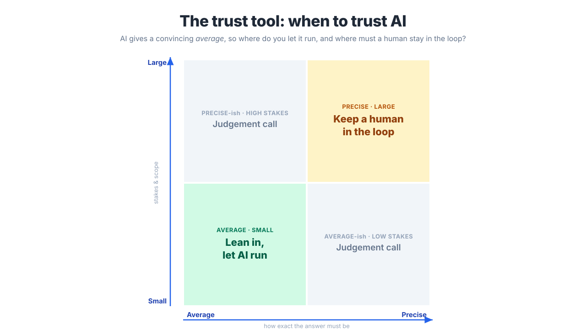

Curtin Executive Education · One-day masterclass
The Human Edge
Using and delivering AI with judgement — because when everyone has the same tools, your judgement is the edge.

Welcome. This is your companion site for The Human Edge — a one-day masterclass that builds the one skill AI can’t replace: knowing when to trust it, and where you must stay in charge. Everything you need is here.
Before the dayThree short reads so you arrive ready. The workshopOne idea, two scales: your desk, then a project. FrameworksThe tools you’ll keep using Monday. Meet the teamInterview RetailFlow’s leadership live.
The idea behind the day
If the AI is genuinely good at running your work, it’s equally good at running everyone else’s. Generic competence, with no variation, is the baseline — not an advantage. So where does your edge live?
The day builds one answer to that question, applied twice:
- The morning builds the judgement at the level of your own work — directing AI well, judging how far to trust any output, and redesigning a real workflow so AI handles what it does well while your thinking stays in charge.
- The afternoon lifts the same judgement to delivery — how to scope, lead and ship an AI project without the predictable failures, designing human checkpoints in from the start rather than bolting them on after something goes wrong.
The connective tissue is the trust tool — a simple grid (Average/Precise × Small/Large) that turns “where does a human stay in the loop?” into a question you can actually answer. You learn it once, in the morning, at the task level. You reuse it, in the afternoon, at the project level. Same grid, two scales.
What you’ll leave with
- Reusable decision tools — the trust tool, RTCF, the five differences, Scale/Pivot/Kill. Tool-agnostic; they don’t expire when the next model ships.
- A redesigned workflow from your own role, ready to trial.
- A project design — scope, roadmap, checkpoints, risk — for a real scenario.
- A personal action plan for the week, month, and quarter.
How the day runs
| Time | Block |
|---|---|
| 9:00–10:30 | The average, the tool, the edge — foundations + the trust tool |
| 11:00–12:30 | Using AI well, yourself — prompting, workflow redesign |
| 1:15–2:30 | Why AI delivery is different — the five differences |
| 3:00–4:00 | Designing the human in, then shipping — checkpoints, roadmap, go/no-go |
| 4:00–4:30 | The edge that’s left to humans + your action plan |
This course scaffolds the theory and points you to where to dig. The free companion resource, Conversation, Not Delegation, goes deeper on every idea here, including the trust tool for deciding when to rely on AI.